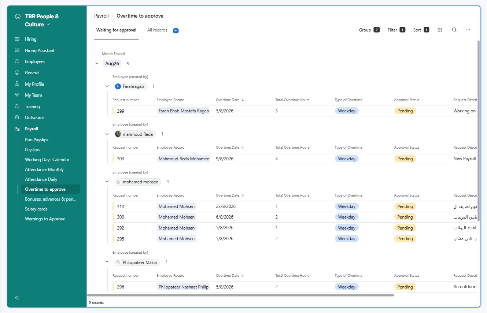
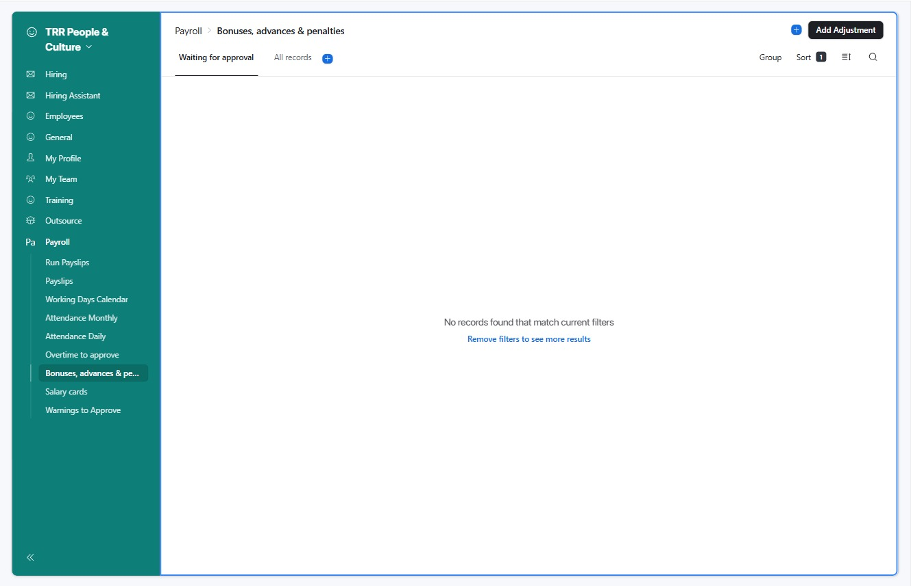
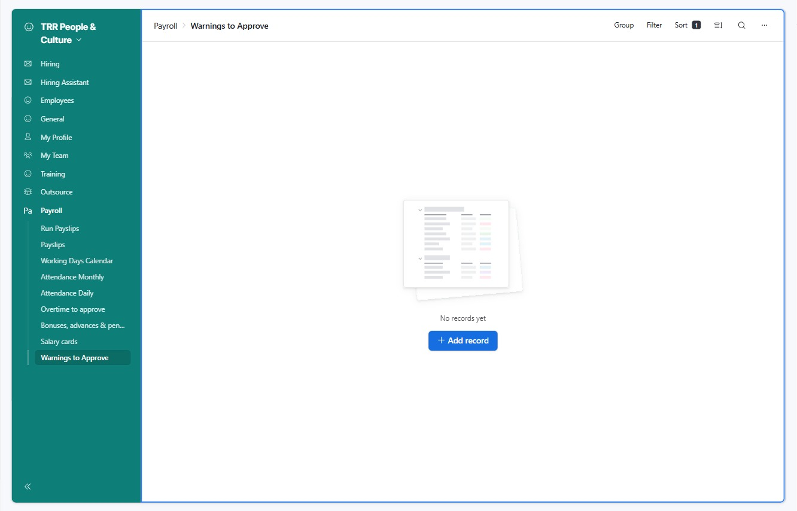
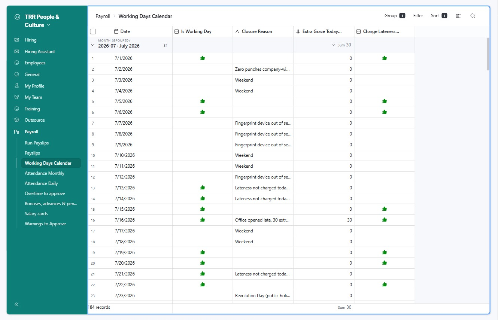
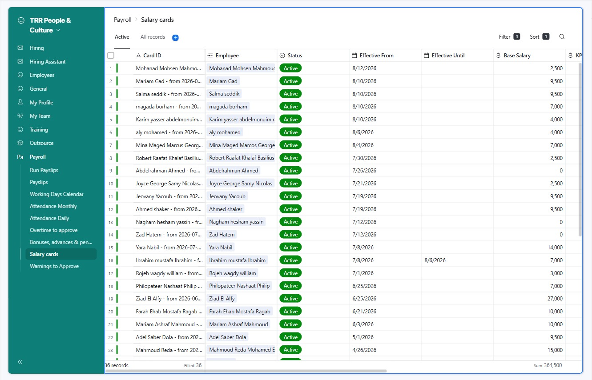
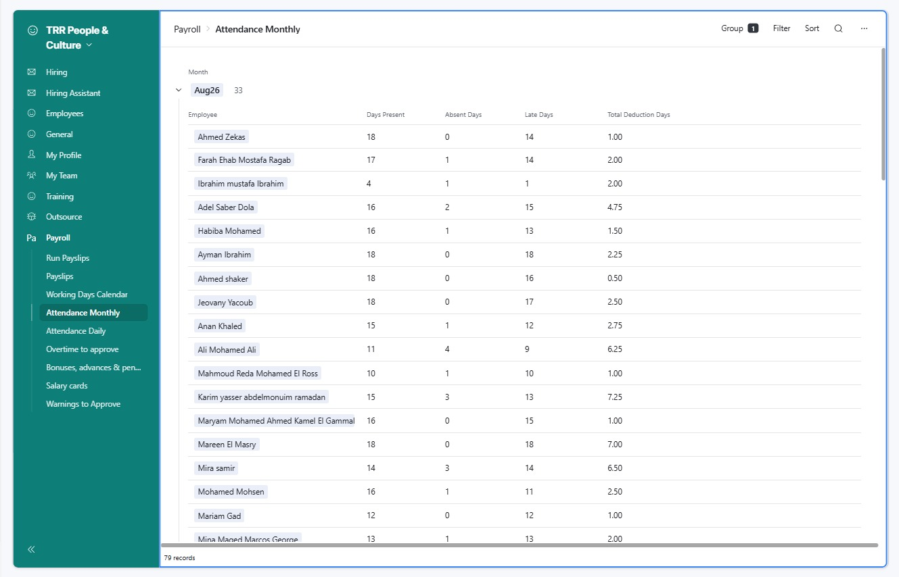
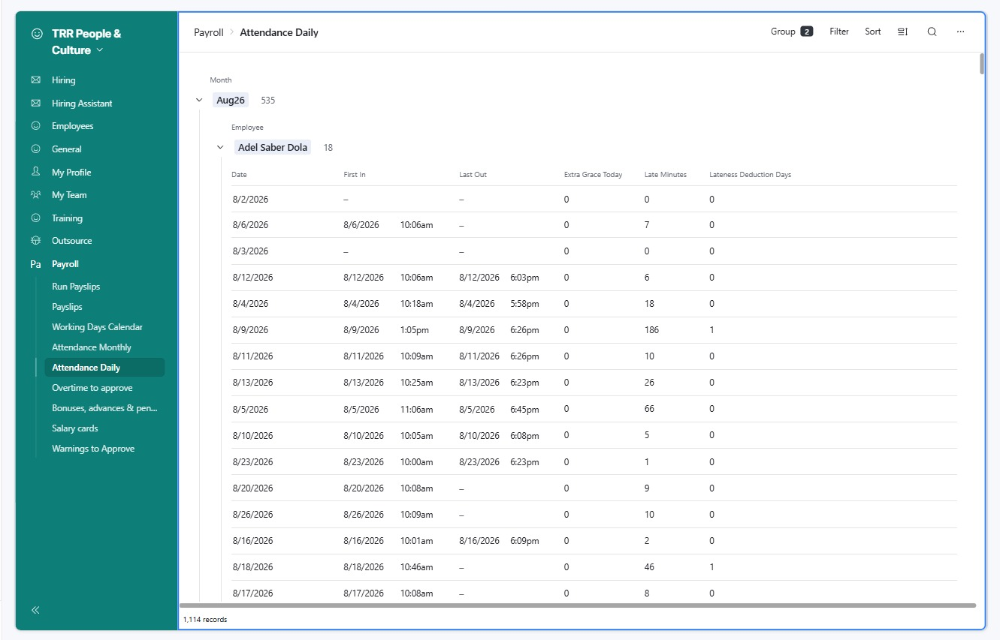
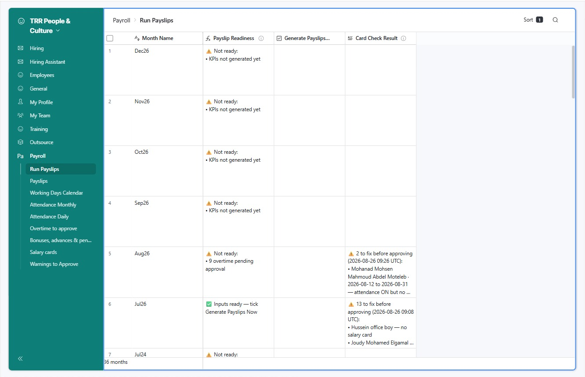
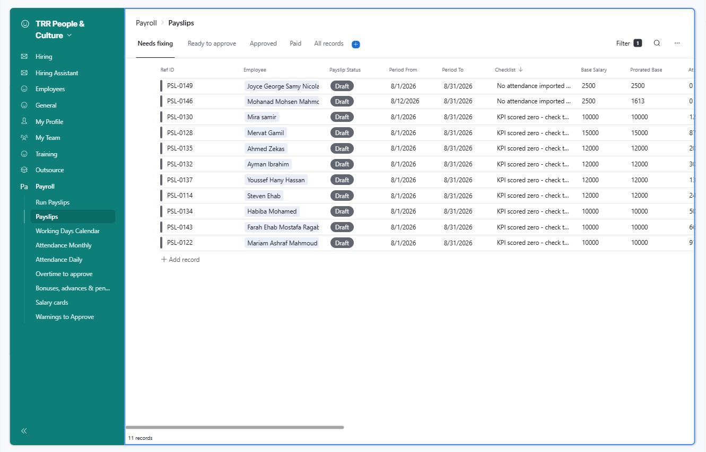

Run payroll
Everything that has to be approved and checked, in the order you do it
New to this? Read this first
What you are doing. Once a month every employee gets a payslip — one record saying what they earned and what was taken off. The system builds those payslips for you. Your job is to make sure the information going in is complete and approved before you press the button, then to check what comes out.
Two rules that matter more than anything else
- Work only inside the Payroll menu on the left of Airtable. Everything you need is one of those nine pages. Never edit the raw tables.
- Nothing reaches an employee until the very last step. You can build, rebuild and fix as often as you like. Only Mark Paid sends anything out.
What the system works out on its own
You never calculate any of this by hand: base pay, part-months for joiners and leavers, absence and lateness deductions, overtime pay, the KPI bonus, commission, and the final take-home figure.
What only a person can do
- Approve things. The system will never pay anything that is still sitting on "Pending".
- Tell it about the real world — public holidays, office closures, who left and when.
You are not the approver for everything
Overtime, leave, KPI scores and delivery sign-off belong to each person's manager. You chase them; you do not decide for them. What is yours: bonuses, advances and penalties, whether a warning costs someone money, the calendar, the salary cards, and the run itself.
If you get stuck
Nothing you do before step 11 is permanent. Open What the red messages mean near the bottom of this page — every message the system can show you is listed there in plain English, with the fix and who does it.
Part 1 · Get everything in and approved — the last few days of the month
-
Payroll › Overtime to approve · tab Waiting for approval
Overtime, KPI scores and leave are the manager's decision, not yours. You are here only to see what is outstanding and go and ask for it. If a manager never approves an overtime request, that person simply is not paid for those hours — nobody gets chased automatically.
- Open Overtime to approve. The Waiting for approval tab shows only what is still undecided, grouped by who submitted it.
- An empty page means you are done here. Otherwise message each manager with the names in their group.
- Now check the other two, which live in a different menu:
- My Team › KPIs — everyone who gets a KPI bonus needs their ratings filled in for this month.
- My Team › Leaves — nothing left on Pending.
Get leave approved before you import attendance.A day off still sitting on Pending is read as an unexplained absence, and that person loses a full day's pay for it.No KPI ratings means a KPI bonus of zero.It does not mean "average" and it does not mean "skip it" — the payslip will be held back saying the KPI scored zero. This is the most common hold-up in the whole run.
Nine requests still on Pending. Each group heading is the person who submitted it — go to their manager. -
Payroll › Bonuses, advances & penalties · tab Waiting for approval
This is the one money page that is yours. Anything one-off — a bonus, a salary advance, paying somebody back for something they bought, a penalty — is recorded here. You do not have to work out whether it adds or subtracts: you choose the type, and the system knows.
- Open the page and stay on Waiting for approval. An empty list means nothing is outstanding.
- Open each one, read the reason, and set Approval Status to Approved or Rejected.
- To add a new one, use Add Adjustment at the top right. Fill in the person, the month, the amount, and pick the type:
- Adds to their pay: Bonus · Reimbursement · Commission Override · Correction (Add)
- Comes off their pay: Advance · Loan Repayment · Penalty · Correction (Deduct)
- Always type the amount as a positive number. The type decides the direction — never use a minus sign.
One Pending adjustment holds back that person's whole payslip.The system refuses to pay somebody while money that might be theirs is still undecided. If it is not happening, reject it — a rejected adjustment is simply ignored.
This is what "nothing outstanding" looks like. Add Adjustment, top right, is how you add a new one. -
Payroll › Warnings to Approve
Managers write warnings when something goes wrong — lateness, dress code, conduct. Most are a record only and cost nothing. You decide the small number that carry a pay deduction. Nothing is ever deducted unless you say so.
- Open Warnings to Approve. An empty page means nothing needs a decision.
- For each one, read the description and set Financial Status:
- Not Financial — a record only, no money. This is most warnings.
- Approved for Deduction — this one costs money. Only this setting reaches the payslip.
- Waived — you decided not to charge it.
- If it is chargeable, check Warning Action Taken — that is what sets the size:
- Full Day Salary Deduction — one day's pay
- 1/2 Day Salary Deduction — half a day's pay
- Verbal Warning — nothing
Decide before you build the payslips, not after.Once a warning has been attached to a payslip, changing it to Waived does not remove the deduction by itself. If you change your mind later, re-tick Generate Payslips Now so the payslip is rebuilt from scratch.
Nothing waiting — move on. When something appears here, it needs a decision from you. -
Payroll › Working Days Calendar
The system has no idea which days were public holidays or when the office was shut. It treats every day as a normal working day unless you tell it otherwise — and if you don't, it charges the entire company as absent for a day nobody was meant to be in.
- Open Working Days Calendar and scroll to your month. There is one row per day.
- Public holiday, weekend or office closed? Untick Is Working Day and write why in Closure Reason — for example Revolution Day (public holiday).
- Office opened late? Leave it as a working day and put the extra minutes everyone is forgiven into Extra Grace Today (min) — for example 30.
- Fingerprint machine broken, or a day you don't want lateness charged? Untick Charge Lateness Today. People still count as present; they just cannot be charged for arriving late.
The normal arrival rules, for reference.The office starts at 10:00. Up to 11 minutes late is free. More than 11 minutes costs a quarter of a day. More than 31 minutes costs half a day. Any extra grace you set for a day is added on before any of that applies.
A real month. Note the mix: weekends, Revolution Day (public holiday), days the fingerprint device was out of service, and one day given 30 minutes extra grace because the office opened late. -
Payroll › Salary cards · tab Active
A salary card is the record that says what somebody is paid. Everyone who gets paid needs one. It is normally created for you when their contract is added — but if it is missing, that person quietly gets no payslip at all, and you would not notice unless you looked.
- Open Salary cards on the Active tab and compare the list against everyone who worked this month.
- For anyone new, check Base Salary is right and Effective From is their real start date.
- Look at the Sum under the Base Salary column. If it has jumped since last month for a reason you don't recognise, find out why before going on.
- For anyone who left: open their Contract, fill in Termination Date with their true last working day first, and only then tick Contract Terminated.
Date first, then the tick. Never the other way round.If you tick Contract Terminated while the date is still empty, the system stamps today as their leaving date and closes their pay on the wrong day.Somebody who should not be paid at all?Unpaid interns and anyone off the payroll should have Payroll Exclude ticked on their employee record. They are then skipped completely and never show up as a problem.
36 active cards. The Sum at the bottom right is your quickest sanity check on the month's total wage bill. -
TRR Attendance page (not Airtable) → then → Payroll › Attendance Monthly
Everyone's fingerprint punches sit in the machine until you pull them across. Until you do, the system has no idea who was absent or late — and will happily pay everybody in full.
- Open the TRR Attendance page and click Update attendance. It reads the machine and saves everything into Airtable. Running it more than once is completely safe.
- Go back to Airtable and open Attendance Monthly. This is one row per person for the month — days present, absent, late, and total deduction days.
- Read down it and ask two questions:
- Is everybody here? Somebody missing entirely usually means their fingerprint ID is not linked to their employee record.
- Does anything look impossible? Someone showing 0 or 4 days present who you know was in all month means their punches did not come through.
- To dig into one person's individual days, open Attendance Daily and group by employee. You get every date, the first punch in, the last punch out, and how many minutes late they were.
This is the one deadline you cannot miss.If attendance is not imported, nobody is charged for a single absence or late arrival. The payslips will look completely normal and be wrong.Do this after leave is approved, not before.Approved leave cancels the absence out. An approved day off costs nothing; the very same day left on Pending costs a full day's pay.
Step one: the Update attendance button on the TRR Attendance page. 
Step two: one row per person. Ibrahim shows only 4 days present — exactly the kind of row worth a second look. 
And when you need the detail: every day for one person, with the exact minutes late and what it cost.
Part 2 · Build the payslips and clean them up — nothing here is sent to anyone
-
Payroll › Run Payslips
This page has one row per month. Before you build anything it tells you, in plain English, whether the information is complete — so you are never guessing whether it is safe to go.
- Open Run Payslips and find your month's row.
- Read Payslip Readiness:
- ✅ "Inputs ready — tick Generate Payslips Now" — go ahead.
- ⚠ "Not ready" — it lists exactly what is missing, such as 9 overtime pending approval or KPIs not generated yet. Go and fix those; this turns green by itself. There is no refresh button to press.
- Once it is green, tick Generate Payslips Now.
- Wait about a minute. The tick disappears on its own — that is how you know it has finished.
You can do this as many times as you like.Re-ticking never creates duplicates and never touches a payslip you have already approved. Any time you fix something, tick it again and the payslips are rebuilt with the new information.
Aug26 is not ready — 9 overtime still pending. Jul26 is green and ready to tick. The two right-hand columns are steps 7 and 8. -
Payroll › Run Payslips · column Card Check Result
Some problems can only be spotted after the payslips are built. Rather than hiding them in a technical log, the system writes them into this column by name, in plain English. Read it every single time.
- Stay on the same row and read Card Check Result.
- ✅ "All clean" — nothing to do, go to step 9.
- ⚠ "N to fix before approving" — it names each person and the problem:
- "no salary card" — they worked this month but have nothing saying what they are paid, so they got no payslip at all. Go back to step 5 and give them a card, or tick Payroll Exclude if they should not be paid.
- "attendance ON but no days imported" — their fingerprint recorded nothing whatsoever. As it stands they will be paid in full with no absences taken off. Either re-import, or confirm they genuinely were not in.
- Fix everyone named, then tick Generate Payslips Now again and re-read this column. Keep going until it says ✅.
Never skip a name because the payslip "looks fine".Both of these problems produce a payslip that looks completely normal and pays the wrong amount. That is exactly why this check exists. -
Payroll › Payslips · tab Needs fixing
The Payslips page sorts everything into tabs so you always know what is left: Needs fixing, Ready to approve, Approved, Paid. Your job in this step is simply to empty the first tab.
- Open Payslips and stay on Needs fixing.
- Read the Checklist column. It is written in plain English and says exactly what is wrong with that person's payslip.
- Go and fix the cause — approve the bonus, get the KPI scored, import the attendance. You never edit the payslip itself.
- The payslip moves itself over to Ready to approve once the problem is gone. There is no button to press.
- Don't recognise a message? Open What the red messages mean further down this page — every one is listed with the fix.
A payslip being held back is the system protecting you.It is refusing to pay a number it cannot stand behind. Each of these would otherwise have been a wrong payment that looked completely normal.
Eleven to clear. Nine say KPI scored zero — managers have not put their ratings in yet. Two say No attendance imported. Both are fixed away from this page. -
Payroll › Payslips · tab Ready to approve
Everything here has passed every automatic check. But the system cannot know that a bonus was meant to be 5,000 and not 50,000. Two minutes reading down the column is the cheapest check you will ever do.
- Switch to the Ready to approve tab and read down Net Pay.
- Compare against last month. Anything noticeably higher or lower, open it and look at the breakdown.
- Perfectly normal reasons for a big difference:
- They joined or left part-way through the month, so their pay is scaled to the days they worked.
- A lot of absence or lateness.
- A one-off bonus, or an advance being repaid.
- Commission, which changes every month.
- Also confirm the number of payslips matches the number of people you expect to pay.
Part 3 · Approve and pay — one way only
-
Payroll › Payslips · field Payslip Status
Approving takes a permanent copy of every figure. From that moment the payslip is a record of what was paid rather than a live calculation — so if somebody later changes a KPI score, a salary or an overtime request, an already-approved payslip cannot move.
- On the Ready to approve tab, set each payslip's Payslip Status to Approved.
- If something is still wrong it will refuse and drop back to Blocked. That is the safety net doing its job — go and read its Checklist.
- Approved payslips move to the Approved tab. Nothing has been sent to anybody yet.
Check before you approve, not after.Once a payslip is approved the figures are locked. Correcting a mistake means adding an adjustment to next month, not editing this one.The statuses, in order.Draft — just built · Blocked — something is wrong · Under Review — you are checking it · Approved — figures frozen · Paid — money sent and employee emailed · Void — cancelled and replaced by another payslip. -
Payroll › Payslips · tab Approved
This is the only step in the whole process that an employee ever sees. Marking a payslip Paid emails that person their full breakdown — so the order matters: transfer first, mark Paid second.
- Transfer the salaries. Do this first.
- Once the money is genuinely out, set Payslip Status to Paid.
- Fill in Payment Reference so there is a record of how it was paid.
- Each person is emailed their breakdown automatically. Nobody can be emailed twice.
Never mark Paid before the transfer.The email tells somebody they have been paid. If the transfer then fails or changes, they have already been told the wrong thing.Running this for the very first time?Check with Mahmoud that the payslip email is switched on before you mark anything Paid — it is deliberately kept off until the first real run so nobody is emailed by accident during testing.
What the red messages mean 12 messages
Every message the Checklist column can show you, what it actually means, and who fixes it. Type a word from the message to find it.
›No attendance imported — nobody has checked whether this person was absent or late.
Their fingerprint recorded nothing at all this month, but they are set up to have absences deducted. Left alone, they get paid in full as though they had perfect attendance.
- Re-run Update attendance on the TRR Attendance page (step 6).
- Still nothing? Their fingerprint ID is probably not linked to their employee record — check with Mahmoud.
- If they genuinely were not in at all — long leave, for example — record that properly rather than leaving it blank.
›KPI scored zero — check the employee's Position and Department match a branch of the Overall % formula.
There is a KPI record for this person but it scores 0%, so their KPI bonus is nothing. Almost always this means their manager has not filled in the ratings yet.
- Go to My Team › KPIs, find them, and check the rating boxes are actually filled in.
- Empty? Chase their manager. This is the most common hold-up in the whole run.
- Filled in and it still says zero? Their Position or Department doesn't match any scoring group — that one needs Mahmoud.
›No KPI record for this period.
This person is due a KPI bonus but no KPI record was ever created for them this month, so there is nothing for anyone to score.
- KPI records are created automatically on the 1st of each month. Somebody who joined after that may not have one.
- Check My Team › KPIs for the month.
- If it really is missing, ask Mahmoud to create it — then get the manager to score it.
›KPI percent out of range.
The KPI score came out as something impossible — below 0% or above 100%. Something is wrong behind the ratings.
- Open the KPI record and check no rating has been entered oddly.
- This is rare, and usually a setup problem rather than anything you can fix from the payroll pages.
›Unapproved adjustments exist.
This person has a bonus, advance or penalty still sitting on Pending. The system will not pay them while money that might be theirs is undecided.
- Open Bonuses, advances & penalties and find their record on Waiting for approval.
- Set Approval Status to Approved or Rejected. Either one clears the hold — rejected ones are ignored completely.
›No or multiple salary cards.
Either this person has no record saying what they are paid, or they somehow have two covering the same dates.
- Open Salary cards and search for them.
- None? Their contract probably was not added — adding it usually creates the card automatically.
- Two? The old one should have been closed when the new one started. Ask Mahmoud rather than deleting anything.
- If they should not be paid at all, tick Payroll Exclude on their employee record.
›Attendance does not reconcile.
The days don't add up — the number of days counted doesn't equal present plus absent plus on leave. Something in the import is incomplete.
- Run Update attendance again. This often just fixes itself.
- Open Attendance Daily, filter to that person, and look for days with no status at all.
- Check the Working Days Calendar covers every day of the month.
›Attendance has days where the arrival time is unknown.
On some days there is a punch but no readable arrival time, so the system cannot tell whether they were late — and it will not guess.
- Open Attendance Daily and filter to that person.
- Find the days with an empty First In and check what actually happened.
- If the machine was broken that day, mark it on the Working Days Calendar by unticking Charge Lateness Today.
›Commission lines still pending audit.
This person has commission waiting on a manager's sign-off. Until it is approved it is worth zero.
- Commission comes from delivery submissions and client payments, both signed off by a manager.
- Chase whoever audits deliveries for that team.
- If the commission is not owed, it needs to be rejected rather than left pending.
›Negative net pay.
What is being taken off comes to more than they earned. Usually a salary advance being repaid all in one go, or a penalty that is too large.
- Open the payslip and look at what is being deducted.
- Most often the answer is to split a repayment across two or three months instead of one.
- Change the adjustment in Bonuses, advances & penalties, then re-tick Generate Payslips Now.
›Payroll settings not written.
The payslip was built without the standard rules attached — the working-days divisor, the hours per day and the overtime rate are missing.
- Re-tick Generate Payslips Now on the Run Payslips page. This nearly always clears it.
- If it comes back, ask Mahmoud — it means the settings record itself has been switched off.
›Period dates invalid.
The dates this payslip covers don't make sense — for example it ends before it starts, or it runs longer than the month.
- Usually caused by a wrong date on a salary card or a contract.
- Check that person's Effective From and Effective Until on Salary cards.
- If those look right, this one needs Mahmoud.
Nothing matches that. Try a single word, like KPI, salary or attendance.
Who approves what
If you remember one thing: you do not approve people's work — their manager does. You approve money, and you own the run itself.
| What | Who decides | Where |
|---|---|---|
| Overtime | The person's manager | My Team › Overtime |
| Leave | The person's manager | My Team › Leaves |
| KPI ratings | The person's manager | My Team › KPIs |
| Delivery sign-off (this feeds commission) | The auditing manager | Delivery submissions |
| Raising a warning | The person's manager | My Team › Employee Warning |
| Whether a warning costs money | You | Payroll › Warnings to Approve |
| Bonuses, advances, penalties | You | Payroll › Bonuses, advances & penalties |
| Holidays and closures | You | Payroll › Working Days Calendar |
| Salary cards and leavers | You | Payroll › Salary cards |
| Building, approving and paying | You | Payroll › Run Payslips, Payslips |
Words you'll see, in plain English
Payslip
One person's pay for one month. If somebody's salary changed part-way through the month you may see two payslips for them, one for each part. That is correct — it is not a duplicate.
Salary card
The record that says what somebody is paid — base salary, KPI bonus amount, commission rates, and whether absences are deducted. Everyone who is paid needs one. When someone gets a raise a new card is created and the old one closed, which is why you will see cards marked Superseded.
Prorated
Scaled to the days actually worked. Somebody starting on the 13th of a 31-day month is paid 19 days out of 31, not the full amount. You will see this on every joiner and leaver, and it is usually why their pay looks unexpectedly low.
Deduction day
How absence and lateness are counted — in days rather than money. A full unexplained absence is 1. Arriving more than 31 minutes late is 0.5. More than 11 minutes is 0.25. The system turns those into money using one day's pay.
Adjustment
Any one-off amount added to or taken off somebody's pay this month — a bonus, an advance, a reimbursement, a penalty. Always entered as a positive number; the type decides whether it adds or subtracts.
KPI pot
The most somebody can earn in performance bonus in a month. They receive the share of it their manager's rating gives them — score 80%, get 80% of the pot. No rating means no bonus at all.
Blocked, and the Checklist column
The system refusing to pay a figure it cannot stand behind. The Checklist column says why in plain English. Fix the cause and it clears on its own — there is nothing to press and nothing to override.
Approved, locked, snapshot
Three words for the same idea. When you approve a payslip the system takes a permanent copy of every figure, so a later change to a salary or a KPI score can never move a payslip that has already been paid.
Void
A payslip that was cancelled and replaced, usually because a salary card was corrected after it was built. You can ignore them — they exist so there is a trail.
"Something looks wrong" — quick answers
Somebody has no payslip at all
Almost always a missing salary card. Check Card Check Result on the Run Payslips page — it names them. Also check Payroll Exclude has not been ticked on their employee record by mistake.
I ticked Generate Payslips Now and nothing happened
Give it a minute and refresh the page. When it has finished, the tick disappears by itself. If it is still ticked after a few minutes, untick it, wait, and tick it again.
Someone's pay is much lower than usual
Work down this list: did they join or leave part-way through the month? Is there a lot of absence in Attendance Monthly? Is an advance being repaid? Was their leave left on Pending and charged as absence? That last one is the one worth checking first.
I approved a payslip and it was wrong
You cannot edit it — that is deliberate. Fix it by adding an adjustment to next month: Correction (Add) if you underpaid, Correction (Deduct) if you overpaid. Tell the person either way.
A manager isn't approving anything
You cannot approve it for them, and you should not try. Escalate instead — an unapproved overtime request means their team member does not get paid for hours they actually worked.
The month says "KPIs not generated yet"
Perfectly normal for a month that has not ended yet — KPI records are created on the 1st, for the month just finished. If it says this for a month that has ended, ask Mahmoud.
Tap any step to open the how-to · tap the circle to tick it off · your ticks save on this device, per month
Press Ctrl / ⌘ + P to print or save as PDF